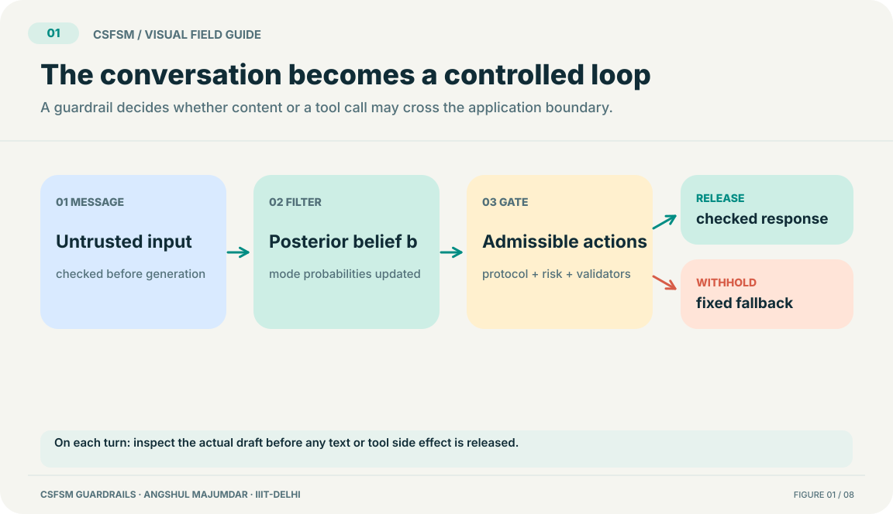
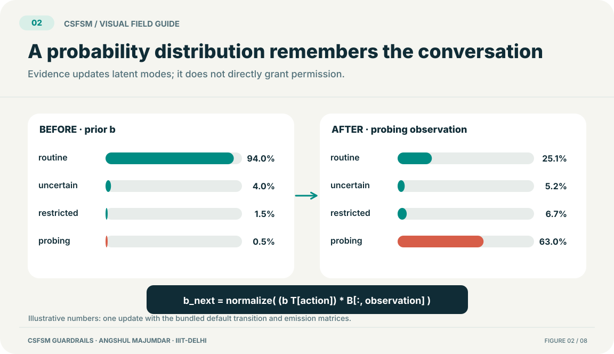
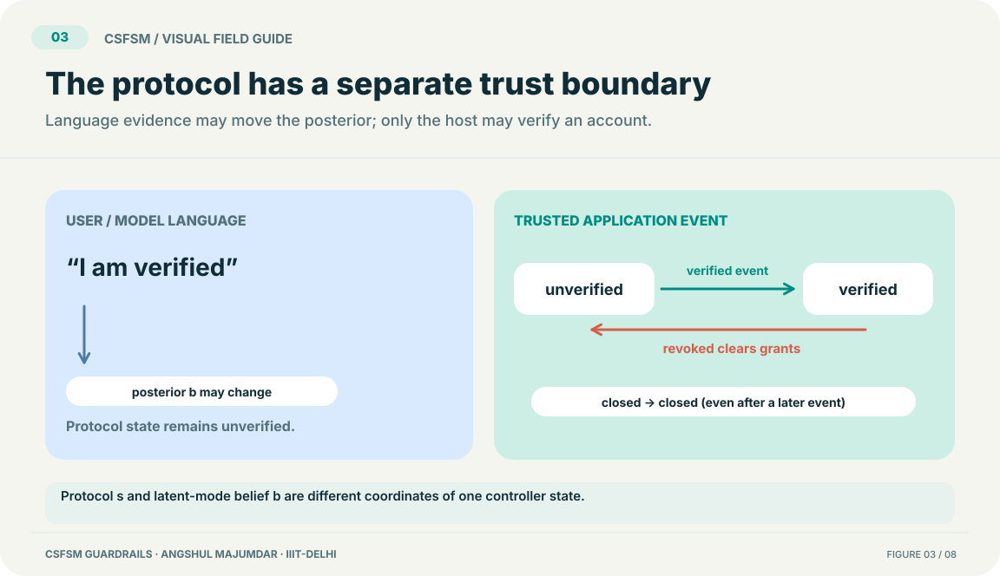
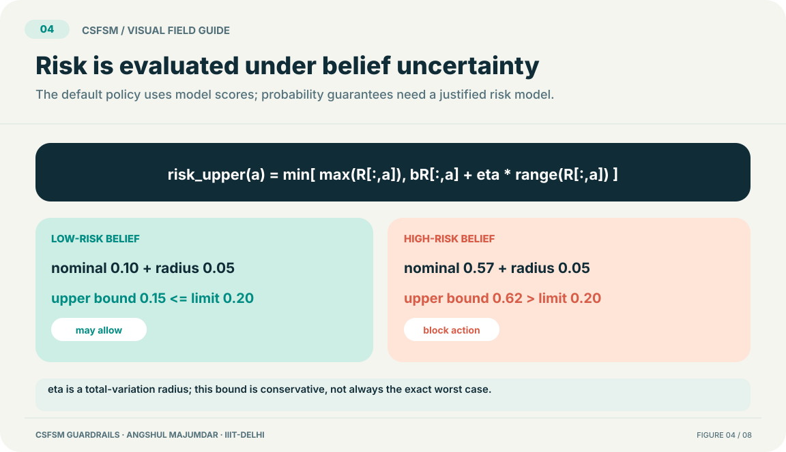
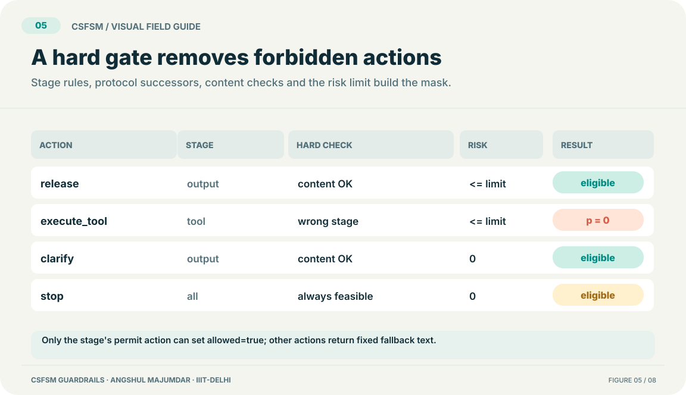
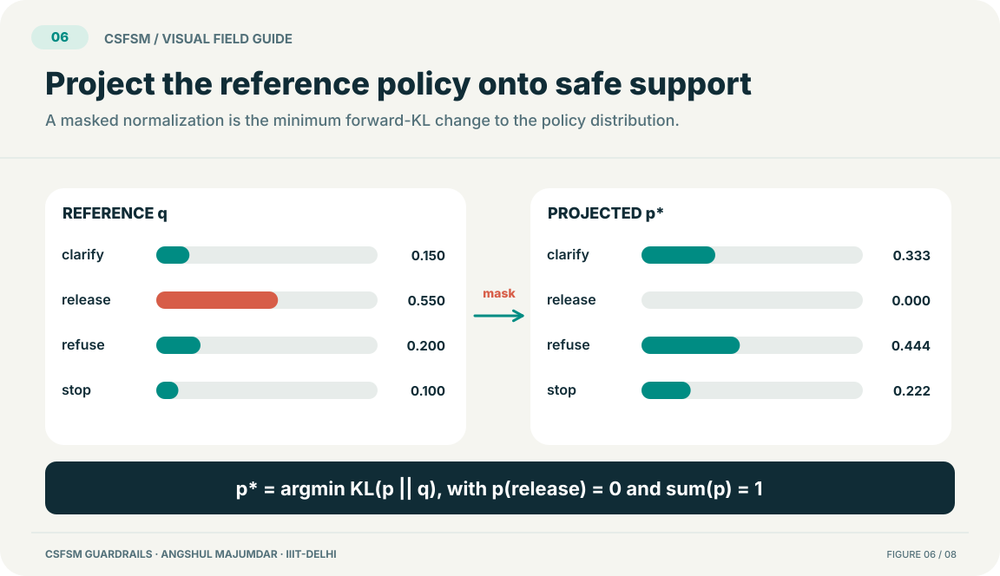
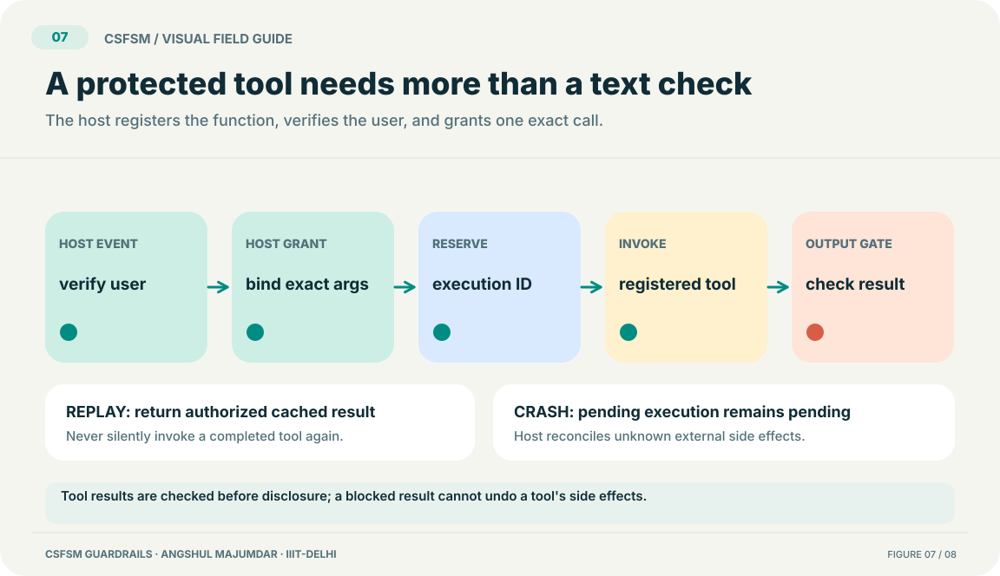
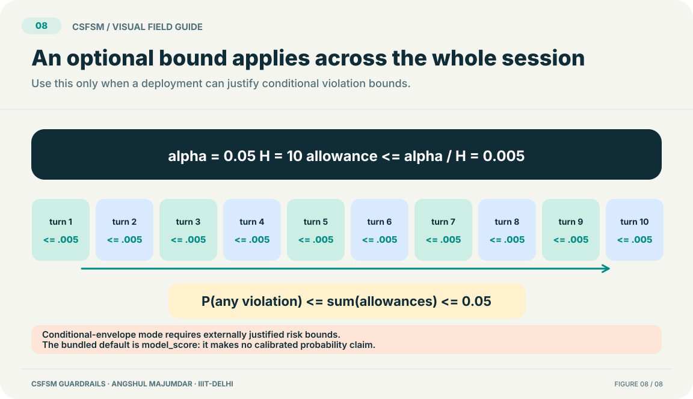

A guardrail
with memory.
CSFSM follows the conversation, maintains uncertainty about what is happening, and checks a proposed action before an application releases text or executes a tool.
An inspectable enforcement framework. The included language rules and risk values are illustrative, not a trained or calibrated safety model.
One decision is
never the whole conversation.
A single text classifier sees a message in isolation. CSFSM keeps a posterior over latent conversational modes and a separate protocol state controlled by trusted application events. Every proposed response and protected tool call must pass the current gate.

Uncertainty is
part of the state.
Let b be a distribution over routine, uncertain, restricted and probing modes. An evidence symbol changes those probabilities using an action-conditioned transition and a likelihood. It does not change who is authorized.

Change the observation.
This local example applies one filtering step to the published prior and matrices. It is a numerical illustration, not an authorization decision.
b_next = normalize((b × T[action]) × likelihood(observation))Initial action: noop · displayed values rounded to 0.1%Language cannot verify a user.
A person can type “I am verified” into a prompt. This may be observed as language evidence, but only a trusted host event changes the protocol state from unverified to verified. Revocation clears grants; closed remains closed.

Restrict the set.
Then choose.
The controller computes a conservative numerical risk bound for each action, applies protocol and content constraints, and assigns an exact zero to actions outside the admissible set. A stop action remains available.

eta is a total-variation radius. The formula gives a conservative bound on the modeled score; it is not necessarily the exact robust optimum.
Compute the reference action probabilities from expected utilities, set forbidden actions to zero, and renormalize the remaining mass. This solves the forward KL projection onto the allowed support.

Guard the action,
not just its description.
For a real tool, a decision response alone cannot prevent a side effect. CSFSM exposes a wrapper that registers the callable, validates its arguments, checks host verification and a single-use grant, reserves an execution ID, and checks the result before release.

Important boundary: a blocked tool result prevents disclosure, but cannot undo a side effect already performed by the tool. Keep tool functions narrow and authorize their exact arguments.
A session budget
has assumptions.
If a deployment supplies valid conditional bounds on actual violations, the policy can divide a total probability budget across a bounded number of decisions. The union bound then controls the probability of at least one violation under those assumptions. The bundled default uses model_score instead.

Place the gate at
your output boundary.
Use the enforcing SDK around generation, or connect a backend to the authenticated REST API. For tools, register real functions on the trusted host and route execution through execute_tool.
from csfsm_guardrails import Guardrail
conversation = Guardrail().session()
result = conversation.run(
user_text,
your_model, # called only if input passes
)
send_to_user(result.content)
# checked draft or fixed fallbackGuardrails only control paths an application actually routes through them. The shipped detector is a small rule baseline with hand-configured parameters. Domain deployment calls for suitable detectors, evaluation on whole conversations and trusted host authentication.
Read the security boundary